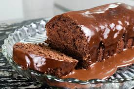
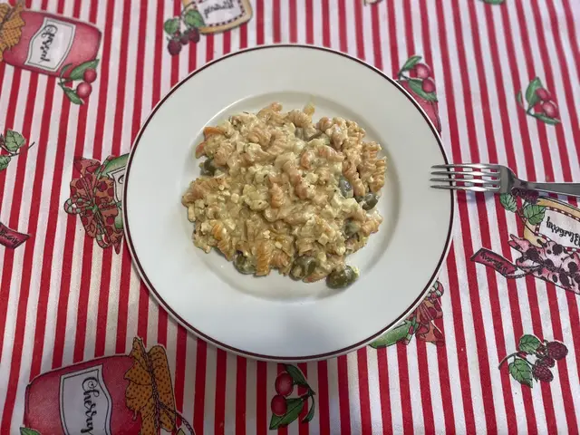

Receitas Deliciosas Sem Lactose

Bolo de Chocolate Sem Lactose
Ingredientes:
- 1 e 1/2 Xícara de Chá de Açúcar
- 1 Xícara de Chá de Cacau em pó
- 1/2 Xícara de Chá de Óleo de Coco
- 1/2 Xícara de Chá de Amido de Milho
- 1 Xícara de Chá de Água Morna
- 3 Ovos
- 1 Colher de Sopa de Fermento
Modo de Preparo:
- Bata os ingredientes até ficar homogêneo.
- Unte uma forma com óleo de coco e asse a 180ºC por 30 minutos.
- Retire o bolo da forma e reserve.

Macarrão de Lentilha com Molho Branco Vegano
Ingredientes:
- 1 cebola
- 4 dentes de alho
- 1 pacote de Macarrão de Lentilha
- 1 pacotinho de tofu
- Queijo ralado vegano
- 200 ml de creme de leite vegano
- 50 g de azeitona
Modo de Preparo:
- Refogue a cebola e o alho.
- Adicione o tofu, creme de leite e queijo vegano.
- Acrescente a azeitona e o macarrão, cozinhe em fogo baixo.